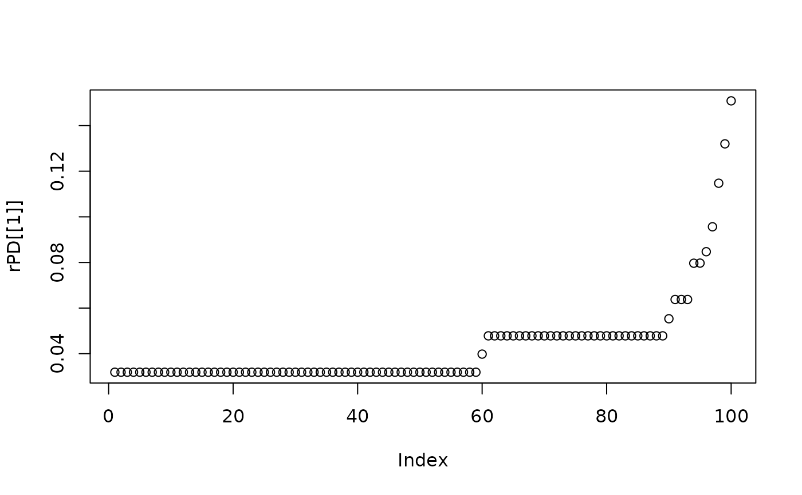
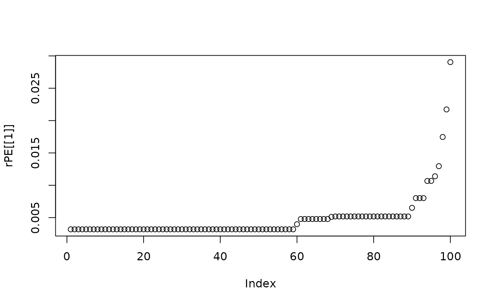
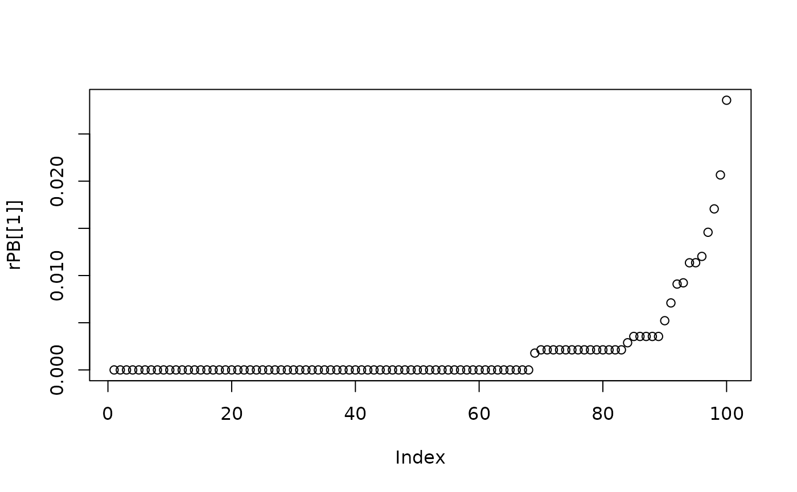
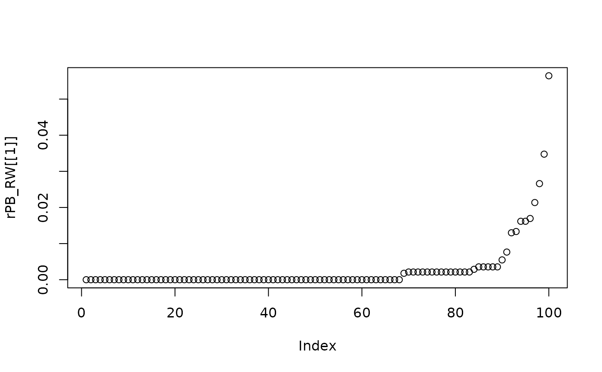

Calculates the relative value of a phylogenetic index in a temporal sequence of phylogenetic slices.
Source:R/r_phylo.R
r_phylo.RdThis function estimates the relative value of a phylogenetic index in a sequence of multiple phylogenetic slices cut from roots to tips.
Arguments
- tree
phylo. An ultrametric phylogenetic tree in the "phylo" format.
- n
numeric. A numeric value indicating either the number of temporal slices (method = 1) or the time interval in million years (or phylogenetic diversity) among the tree slices (method = 2). Default is 1.
- mat
matrix. A presence/absence matrix containing all studied species and sites.
- adj
matrix. A square adjacency matrix containing the presence/absence information of all sites and their spatially adjacent ones.
- index
character string. The phylogenetic index to be calculated over the phylogenetic slices. It can be set as "PD" (phylogenetic diversity), "PE" (phylogenetic endemism), "PB" (phylogenetic B-diversity), or "PB_RW" (phylogenetic B-diversity range-weighted).
- comp
character string. The component of phylogenetic beta-diversity to obtain the relative value. It can be "sorensen", "turnover", or "nestedness". Default is "sorensen".
- method
character string. The method for calculating phylogenetic beta-diversity. It can be obtained through a "pairwise" or "multisite" approach. Default is "multisite".
- criterion
character string. The method for cutting the tree. It can be either "my" (million years) or "PD" (accumulated phylogenetic diversity). Default is "my".
- ncor
numeric. A value indicating the number of cores the user wants to parallel. Default is 0.
Value
The function returns a list where each object contains a vector (of length "n") with the relative phylogenetic index, from the phylogeny root to the tips, from the inputted assemblage.
Details
The "adj" argument
Must be filled only for phylogenetic B-diversity ("PB") or it's range weight version ("PB_RW", defined in "index").
Parallelization
Users are advised to check the number of cores available within their machines before running in parallel programming.
Author
Matheus Lima de Araujo matheusaraujolima@live.com
Examples
# Generate a random tree
tree <- ape::rcoal(20)
# Create a presence-absence matrix
mat <- matrix(sample(c(1,0), 20*10, replace = TRUE), ncol = 20, nrow = 10)
colnames(mat) <- tree$tip.label
# Create a random adjacency matrix
adj <- matrix(sample(c(1,0), 10*10, replace = TRUE), ncol = 10, nrow = 10)
# Fill the diagonals with 1
diag(adj) <- 1
# Calculate the relative PD for 100 slices
rPD <- r_phylo(tree, n = 100, mat = mat, index = "PD")
#> > The 100 number of pieces inputted equals to intervals of 0.0159425067153089 million of years.
# Plot the relative PD of the first assemblage
plot(rPD[[1]])

# Calculate the relative PE for 100 slices
rPE <- r_phylo(tree, n = 100, mat = mat, index = "PE")
#> > The 100 number of pieces inputted equals to intervals of 0.0159425067153089 million of years.
# Plot the relative PE of the first assemblage
plot(rPE[[1]])

# Calculate the relative PB for 100 slices
rPB <- r_phylo(tree, n = 100, mat = mat, adj = adj, index = "PB")
#> > The 100 number of pieces inputted equals to intervals of 0.0159425067153089 million of years.
# Plot the relative PB of the first assemblage
plot(rPB[[1]])

# Calculate the relative PB_RW for 100 slices
rPB_RW <- r_phylo(tree, n = 100, mat = mat, adj = adj, index = "PB_RW")
#> > The 100 number of pieces inputted equals to intervals of 0.0159425067153089 million of years.
# Plot the relative PB_RW of the first assemblage
plot(rPB_RW[[1]])
